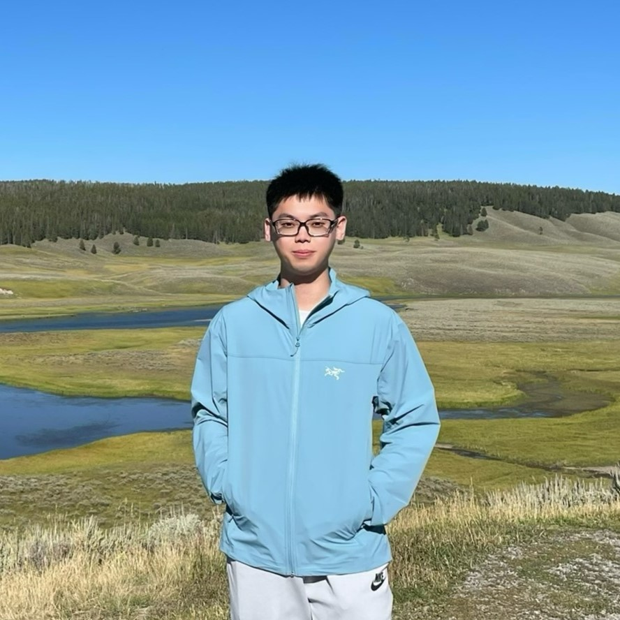
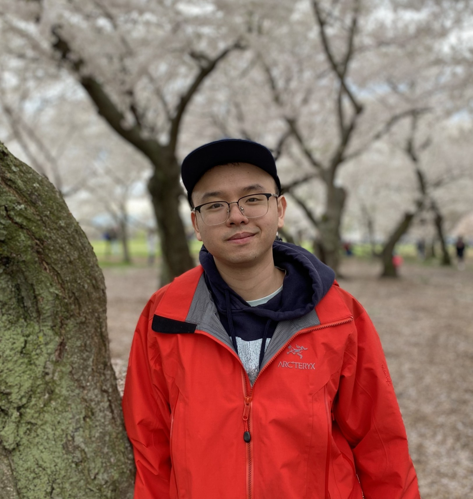

Principal Investigator
Xulong Tang
Associate Professor
Department of Computer Science, University of Pittsburgh
SENSQ 6115, 210 S. Bouquet Street, Pittsburgh, PA 15232
Email: tax6@pitt.edu
PhD Students

Designing and optimizing efficient machine learning algorithms and systems. His work spans video diffusion models, large language model serving and inference optimization, and efficient training frameworks, targeting deployments from large-scale cloud GPU clusters down to resource-constrained edge devices.
Computer architecture and AI systems with a focus on virtual memory management, address translation, and LLM serving infrastructure. Her research designs object-aware page placement policies, fine-grained dynamic page migration, TLB optimizations, and KV-cache reuse techniques that improve performance across multi-GPU workloads and retrieval-augmented generation systems.

Quantum computing compilation frameworks and architecture design for photonic quantum computers. His work addresses measurement-based quantum computation, fault-tolerant circuit compilation, graph state generation via reinforcement learning, and heterogeneous quantum–classical system co-design.
Speculative decoding and draft model acceleration on GPUs and hardware accelerators. His research focuses on reducing LLM inference latency through lightweight draft models, efficient verification kernels, and hardware-aware scheduling strategies that maximize token acceptance rates on modern GPU architectures.
Alumni
- Bingyao Li (Ph.D. 2025) → Tenure-Track Assistant Professor, CSE @ UC Riverside
- Yue Dai (Ph.D. 2025) → Tenure-Track Assistant Professor, CS @ IIT
- Tianao Ge (Visiting Scholar 2024) → HKUST GZ
- Mehrnoosh Raoufi (Ph.D. 2024) → Oracle
- Yuan Yao (M.S. 2023) → Bloomberg LP
- Ziyu Zhang (M.S. 2022) → Apple
- Yilun Zhao (Visiting Scholar 2022) → Ph.D. @ ICT-CAS
- Qi Xue (B.S. 2022) → M.S. @ UPenn
- Zhongxuan Song (M.S. 2023)
- Weizheng Xu (M.S. 2023)
- Zachary Michael Smith (M.S. 2023)
- Thomas Matthew Dicarlo (M.S. 2022)
- Antony Paul (M.S. 2022)